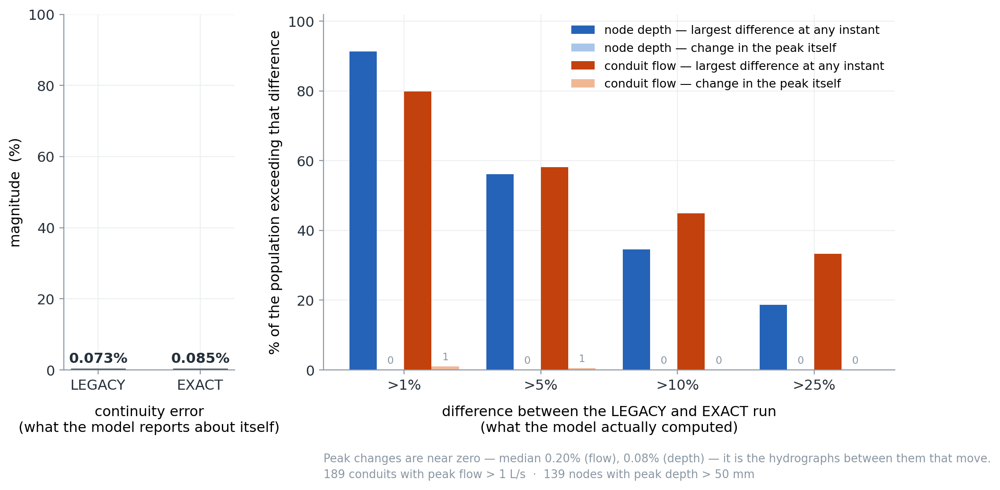
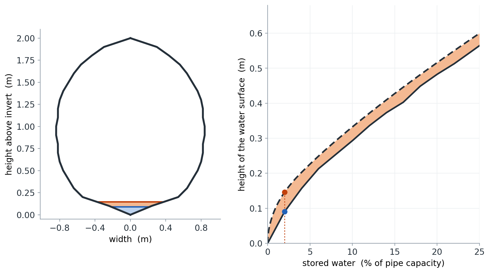

What built-in shape tables get wrong, what replaces them, and what it costs
Where this started
I am building an uncertainty sidecar slowly for SWMM on a different branch and it leads me to wonder about all uncertainty that exists in SWMM that I may overlook. I started to think about SWMM's look up tables, which are approximations of pipe shapes. I was thinking well how much error might this account for and under what conditions? What might this mean for pipe Manning's? When we calibrate this, are we just calibrating something that may very well just be an error term? In particular, how might this affect the finite volume solve?
Started investigating this from a practical perspective, wondering what approach would both reduce that error and let people input any hollow pipe shape they want.
What follows is an AI-written summary that I directed and verified about what turned up and some of what it implies.
Maybe this will spark your interest if you have a network with some funky shapes. I hope you try out these new features, help debug a bit, and get back to me on how your results may have changed.
— Corinne Wiesner-Friedman
Five-minute version. SWMM describes each built-in pipe shape with two small lookup tables that contradict each other: differentiate the area description and you do not get the width table back. That is not a precision problem. The equations these solvers integrate assume top width is the derivative of area, so an inconsistent pair means the solver is being handed a cross-section that cannot exist. We replaced the tables with exact geometry, which fixes that by construction.
The finding worth your attention is what happened next: switching to exact geometry moved dynamic-wave hydrographs — a median of 7% of peak flow at each conduit's worst moment, 1.2% averaged over the whole record — while the continuity error stayed flat at ~0.08%. The model's standard quality check is structurally blind to this class of error. Peak values themselves barely moved, which is a finding in its own right. Everything below expands on that, and every claim links to the code or the measurement behind it.
Continuity stayed flat while the predictions moved

Both panels are the same two runs: Bellinge (1015 conduits, 48 h, dry-weather), dynamic wave, one binary, one changed option — XSECT_GEOMETRY LEGACY versus EXACT.
Left: what the model says about its own quality. Continuity error moves from 0.073% to 0.085%. By that measure, nothing happened.
Right: what the model actually computed. Take each of the 189 conduits carrying more than 1 L/s and ask how far apart the two flow records ever get, as a fraction of that conduit's own peak: 80% diverge by more than 1% of peak at some point, 45% by more than 10%, and 33% by more than 25%. Median 7.0%; averaged over the whole 48 h rather than taken at the worst instant, the median is still 1.2% and the upper decile 14%. Node depths behave the same way (median 5.8% at the worst instant; one node's depth differs by 755 mm at one moment).
What does not move is the peak. Peak flows agree to a median of 0.20%, and the largest change in any node's peak depth across the whole network is 2 mm. So exact geometry does not rescale the answer — it shifts the timing and shape of the hydrograph underneath an almost unchanged peak. That distinction matters if you calibrate to peaks, and it matters more if you use the model for anything that integrates over the record: first flush, pump cycling, CSO spill duration, sediment transport.
Same water, same network, same solver, same time-step settings. The only difference is how the pipe's cross-section was described.
The uncomfortable implication. A modeler checking continuity to decide whether a run is trustworthy would see no reason for concern in either run. The error is real, it is systematic, and the standard diagnostic cannot see it. That is what "unquantified uncertainty" looks like in practice — not a missing error bar, but a quality check pointed at the wrong quantity.
The area and width tables describe different pipes
SWMM describes each shape's area and its top width with separate, independently digitized tables — and for four shapes the area description is itself a second table, inverted. But width is the derivative of area; they are not independent facts. Differentiate the area description and you should recover the width table. You do not.

A 2 m gothic sewer holding 2% of its capacity. Gothic is one of the shapes that ships no area table, so its area comes from a 51-point depth-of-area table instead: read that, and the water surface is at 0.090 m. Integrate the shape's own 21-point width table to the same stored volume and it is at 0.146 m. The orange band is the 56 mm the two descriptions cannot agree about — drawn at true scale. At 0.5% capacity the two answers are 23 mm and 74 mm — more than a factor of 3.
A LEGACY run consults both tables in the same timestep — area from one, width from the other — so the disagreement propagates into surface storage, friction and wave speed continuously.
The disagreement is worst where models spend dry weather, and it is much worse for some shapes than others:
| Shape | width pts | at 2% depth | median, full range | >10% off across |
|---|---|---|---|---|
| CIRCULAR | 51 | −34% / +22% | 0.7% | 5% of depth |
| HORSESHOE | 26 | +28% | 1.3% | 11% |
| BASKETHANDLE | 26 | +47% | 5.6% | 19% |
| EGGSHAPED | 26 | +37% | 8.1% | 42% |
| SEMIELLIPTICAL | 21 | +82% | 10.7% | 53% |
| CATENARY | 21 | +97% | 15.0% | 60% |
| GOTHIC | 21 | +202% | 14.4% | 65% |
| SEMICIRCULAR | 21 | +72% | 17.7% | 71% |
Two notes on reading that table. The 2% depth column is a local slope, so it is sensitive to where the table's own nodes fall: y/D = 0.02 is exactly a node of circular's 51-point table, and the slope jumps from −34% just below it to +22% just above, which is why that cell carries two numbers. Every other row sits mid-interval and is a single value. The last two columns are dense sweeps and are not node-sensitive.
The pattern is not random: of the eight shapes here, the four worst are exactly the four that ship no area table at all. Those four carry only a 21-point width table plus 51-point depth-of-area and section-factor tables, and their area is recovered by inverting the depth-of-area table (XSectKernels.hpp) — a second, independently digitized description of the same pipe, which is exactly why it need not agree with the first. Circular — the best-resourced shape, and the one most networks are mostly made of — is by far the best behaved. (The pattern is suggestive rather than a law: HORIZ_ELLIPSE, which is not in the table above and does ship a 26-point area table, computes to a comparable ~12% median.)
Why this is a correctness problem, not just a precision one. The Saint-Venant equations are not agnostic about geometry — they are derived assuming a real cross-section. Continuity is ∂A/∂t + ∂Q/∂x = q, and writing it in the depth form every solver actually uses requires the chain rule step ∂A/∂t = T·∂y/∂t — which is valid only if T = dA/dy. Give the solver a T that is not the derivative of its A and the discrete system is no longer a discretization of the shallow-water equations for any pipe. It is a discretization of an inconsistent system.
This is not abstract. Dynamic wave uses top width to convert net inflow into head change at a node (
surfArea = (w1 + wM)·length/4,DynamicWave.cpp) and area to report the volume stored in the conduit (links.volume = area_mid · length · barrels). Those are precisely the two tables that disagree. No physical cross-section has gothic's tabulated area and its tabulated width — so the pipe the momentum equation sees and the pipe the continuity equation sees are different objects.Exact geometry does not merely reduce this error, it removes its cause. Area and width stop being two digitizations and become two boundary integrals of one and the same outline, on which T = dA/dy holds identically. What the solver evaluates is a compiled approximation of that outline, so the identity survives to the fit tolerance rather than to the last bit: measured on a compiled 4 ft circle, |dA/dy − T|/T has a median of 1×10⁻⁸ and a worst case of 1.5×10⁻⁷. The circular tables it replaces, measured the same way over the same depth window, sit at 0.6% median and 22% worst — six orders of magnitude apart, and circular is the best of the shapes.
Dig deeper. The constants themselves:
xsect_tables.hpp. The inherited-defect register, including this one as LD-1:docs/dev/legacy_defects.md. Reproduce the table above by resampling both descriptions — the area table where one exists, the inverted depth-of-area table where it does not — scaling by each shape'saFull/wMaxfromxsect.c, differentiating the area, and comparing to the width table.
Only finite volume converts a geometry error into a mass error
The same geometry error sits in both solvers. Only one of them has an instrument that detects it.
- Dynamic wave consults geometry. It asks for an area at a depth and uses the answer. The error perturbs that timestep and leaves no trace in any mass balance.
- Finite volume embeds geometry in its conservation statement. Cell state is flow area; depth is recovered by inverting the same geometry every substep. A geometry inconsistency becomes a mass error — and mass errors show up on the continuity line.
| LEGACY | EXACT | ||
|---|---|---|---|
| FV, 2 h window | −2.253% | −0.134% | ~17× better |
| FV, filling window | −4.453% | −0.022% | ~200× better |
| DYNWAVE | −0.073% | +0.085% | no meaningful change |
Read this the right way round. FV's large continuity error under LEGACY is not evidence that FV is worse — it is evidence that FV can see something DYNWAVE cannot. The dynamic-wave row looks clean not because its geometry is accurate, but because it has no mechanism that converts geometry error into mass error. The figure at the top of this piece is what that same error looks like when you go and measure it directly instead of trusting the diagnostic.
The reason is worth stating plainly, because it is structural rather than incidental: DYNWAVE's continuity check balances volumes that are themselves computed from the geometry in question. Stored conduit volume is area × length, read from the same area table that drives the routing. A geometry error therefore shifts both sides of the ledger together and the balance still closes. The check confirms the bookkeeping is self-consistent; it was never an instrument for asking whether the geometry is right. FV, by contrast, must invert its geometry every substep to recover depth from the conserved area — so an inconsistency has nowhere to hide.
For the numerically inclined. The requirement FV imposes is stated in
FvKernels.hpp: the compositiondepthOfArea ∘ areaOfDepthmust be the identity, not merely accurate, or cells at equal free surface but different bed elevation reconstruct different surfaces and lake-at-rest fails. Two independently digitized tables cannot satisfy that. One boundary can, by construction.
One exactly integrated boundary replaces the tables
Draw the pipe's real boundary as straight segments and circular arcs. Compute its hydraulics from that boundary once at load time via Green's theorem — a closed-form contour integral, so at any depth the area, perimeter and top width are exact, with no depth table and no linear interpolation anywhere. Then compress those exact functions into a piecewise polynomial the solver evaluates in a short chain of multiply-adds.
The property that matters is that every quantity now comes from one object. Area, top width, perimeter, hydraulic radius and section factor are five quantities computed from a single outline rather than five separately digitized tables, so they cannot describe different pipes — T = dA/dy holds identically. The compiled polynomials inherit the identity to about 10⁻⁸ relative, six orders tighter than the tables, rather than the exact zero the underlying geometry has.
The mathematical core, for those who want it. The area-versus-depth curve kinks where the surface crosses a corner and picks up a square-root branch point where it goes tangent to a curved wall. Split the depth range at those critical heights and each piece is analytic — where polynomial approximation converges geometrically (Trefethen, Approximation Theory and Approximation Practice, Chs. 3 and 8). The critical heights are the critical values of the height function on the section's boundary — Morse theory in the textbook sense where the wall is smooth (Milnor, Morse Theory), with corners and flat crowns contributing critical heights of their own; the height has no critical points in the interior, and the piecewise structure is a Reeb graph on the depth axis (Edelsbrunner & Harer, Computational Topology, Ch. VI). A per-piece change of variable removes the branch points. Implementation and convergence argument:
docs/dev/cheb_section.md,ChebSection.hpp,XSectBoundary.hpp.
Arbitrary and time-varying sections become expressible
POLYGON takes an explicit boundary of lines and arcs
POLYGON takes an explicit boundary of lines and arcs — asymmetric, benched, filleted, surveyed. It is evaluated exactly, and a bench's top-width jump is represented rather than smoothed away.
Worth being precise about what "open channel" means here, because it is not what you might assume. The outline you supply is always a closed chain — it has to be, since the exact area and perimeter come from a boundary integral around it, and a self-intersecting or dangling chain is rejected with an error. A separate flag in [XSECTIONS] (Link POLYGON Scale Open 0 0 Barrels Bcurve) then declares whether the top of that outline is a wall or a water surface. Set it open and the top edge drops out of the wetted perimeter, conveyance stays single-valued, and water rising past the drawn section extends it with vertical walls rather than pressurizing through a Preissmann slot. So you draw a closed shape and tell the engine whether its lid is concrete or air.
This matters because the existing escape hatches are narrower than they look. IRREGULAR is open-channel only, so it cannot close over a box culvert. CUSTOM is closed but symmetric — a width-versus-depth curve says how wide the water is, not where the walls are, so it cannot express a one-sided deformation, and friction is then computed against an assumed shape. Both are resampled into fixed 51-point interpolated tables, reintroducing exactly the error described above: the CUSTOM table carries about 41% area error below 5% of full depth.
Dig deeper.
[XSECTIONS]and[CURVES] XPOLYGONsyntax with a worked four-arc circle:AppendixD.md. Boundary construction and validation:XSectBoundary.cpp.
A conduit's section can be replaced between routing steps
swmm_link_set_polygon() replaces a conduit's cross-section between routing steps, and the solver reconciles the water already in the cells. This is the piece that makes sediment, relining and progressive narrowing modellable as processes rather than as separate scenarios.
The caller states which physical event it is, and there is deliberately no default, because the two cases are opposites:
| Policy | Physics | What happens to the water |
|---|---|---|
CONSERVE_DEPTH | material intrudes — sediment, a liner | surface stays put; displaced volume leaves the conduit |
CONSERVE_VOLUME | material is removed — scour, cleaning | same water, larger section, surface drops |
One counter-intuitive detail worth knowing: a sediment bed is not simply a smaller pipe. A flat bed in a round invert is wider at the water line than the invert it buried, so a silted conduit can hold more water at a given depth above the bed. The engine tracks bed level separately and preserves free surface elevation, not depth — without that, adding sediment reads as adding capacity.
Mid-run changes currently require the FV solver; the legacy solvers accept a new section before a run starts but not during one.
Dig deeper. Policy semantics and the displaced-volume contract:
INetworkSolver.hpp. C API:swmm_link_set_polygon.
EXACT costs about 1.6× on this network, and part of that is a build flag
| Solver | LEGACY | EXACT | ratio |
|---|---|---|---|
| DYNWAVE, Bellinge 48 h | 40.0 s | 63.1 s | ~1.58× |
| FV, Bellinge 2 h | 319.9 s | 536.2 s | ~1.68× |
Those are whole-run wall times for one binary on one machine, and part of the gap is not geometry at all. The engine is built with -ffp-contract=off, which forbids the compiler from folding a×b + c into a single fused multiply-add. The flag is there to enforce the legacy bit-parity contract: with fusion allowed, the same expression rounds differently depending on which call site it was inlined into, which was enough to break several exact-equality tests against EPA SWMM 5.2.4 (src/engine/CMakeLists.txt).
That flag does not fall equally on the two modes. Evaluating a Chebyshev series is almost nothing but alternating multiplies and adds — exactly the pattern fusion exists to accelerate — whereas a table lookup is mostly a bounds check, an index and one interpolation. So the compiled path is structurally the more exposed of the two, and some share of the ratios above is the price of reproducibility rather than the price of geometry. We have not measured that share. Doing it credibly means building the engine both ways and interleaving the runs; this machine has shown up to 18% run-to-run spread on this benchmark, so an uncontrolled before-and-after would not settle it. Treat the 1.58× and 1.68× as what they are — the cost of the shipped build — and the split between "geometry" and "reproducibility" as open.
Why we are not telling you to just switch fusion on. Two reasons, and the second is the one that surprised us.
LEGACYmode lives in the same engine target — it is the v6 engine reproducing EPA's numbers — so enabling fusion globally would strip the parity guarantee from LEGACY runs in that build, and scoping it to the compiled-geometry translation units alone leaks through header inlining. And FV is not the free case it appears to be: FV sits outside the parity contract by design, but it is an explicit substepping scheme in which any bit-level change compounds, and the engine's own build notes record a contraction change moving ~26% of FV output values and the continuity error from −2.989% to −3.124%. Being outside the parity contract means those differences are not guaranteed to be zero; it does not mean they are negligible.
Per shape the picture varies in both directions. Gothic is 5.6× faster compiled, because its legacy path has no area table and must reconstruct one. Circular is the worst case at ~1.15× slower — and it is computing a fourth quantity for that price. Both are per-call microbenchmarks from an earlier build, not extracted from the whole-run times above.
A caution on generalising from Bellinge. Of its 1031 cross-sections, 953 are circular and the other 78 are shapes EXACT does not compile at all. So the entire cost and the entire benefit above are the same 953 pipes. We confirmed this directly: restricting EXACT to every shape except circular produces output byte-for-byte identical to LEGACY. Bellinge cannot tell you what exact geometry is worth on the shapes it helps most, because it contains none of them.
That points at a third mode we have not built — call it SPEED — which would compile a boundary whenever doing so is faster, regardless of accuracy. The dispatch is already per link, so this is a policy, not new plumbing. It would match EXACT on gothic-family shapes (faster and more accurate, no trade) and diverge on circular, leaving it on the table. Honest caveat: only circular and gothic have measured per-shape runtimes; the nine other shapes EXACT compiles are inferred from structure, not timed.
What this does not show
- No validation against measurement. Everything here is measured against exact geometry, the tables' internal contradictions, or the model's own mass balance — never against observed flow or level. The defensible claim is "the geometry is demonstrably more correct," not "the model is more accurate."
- The DYNWAVE differences above are not an error bar. They measure how far the answer moves between two geometry representations. Since
EXACTis demonstrably closer to true geometry, that spread is a reasonable estimate of what LEGACY carries — but it is a difference, not a validated uncertainty. - The differences are in the hydrograph, not in the peak. Peak flows and peak depths are essentially unchanged on this network. Anyone whose interest is peak magnitude should read the result as "geometry error was not distorting your peaks here", not as a warning about them.
- "Exact" is qualified for most shapes. Circular and
POLYGONare genuinely exact. The other tabulated shapes are reconstructed from their own 21–26-point width tables, soEXACTgives them internal consistency, not new information. Gothic results will move noticeably. - One network, one machine, dry weather. Bellinge is mostly circular. Wet weather, surcharged conditions and other shape mixes are untested.
The correctness claim is settled; the predictive claim is not
We set out to let SWMM represent pipes it could not draw. We found that the shapes it can draw are described by tables that disagree with each other, in one case by more than the quantity they describe — which means the governing equations have been integrating a cross-section that does not exist.
Two things follow, and they are different claims. The correctness claim is settled and needs no field data: exact geometry makes T = dA/dy true by construction, so the solver is finally solving its own equations for a real pipe. The predictive claim is not settled — whether that produces better forecasts depends on calibration absorbing the old bias, and we have not tested it against observations.
The result worth carrying is the one in between: the model's standard quality check did not notice either way. Continuity stayed at ~0.08% while a third of the meaningful conduits saw their flow record diverge by more than a quarter of their own peak at some point in the run — even though the peaks themselves barely moved. Whatever else exact geometry is worth, it has made visible a source of uncertainty that has been in every dynamic-wave run for half a century with no diagnostic pointed at it.
XSECT_GEOMETRY EXACT is opt-in and alpha; LEGACY is the default and its output is byte-for-byte unchanged. Full technical detail is in the feature/xsect-geometry → swmm6_rel pull request (39 commits). The legacy solver in src/legacy/ is unmodified.
Reproducing the top figure: run Bellinge twice under DYNWAVE changing only XSECT_GEOMETRY, then compare the two .out files with scripts/compare_results.py's reader, over every reporting period rather than a subsample, restricted to link indices below the conduit count. Figures 2 and the shape table come directly from the shipped constants, independently of the engine build.


Discussion
Comments are powered by GitHub Discussions. Sign in with a GitHub account to join the conversation, or open the discussion on GitHub.